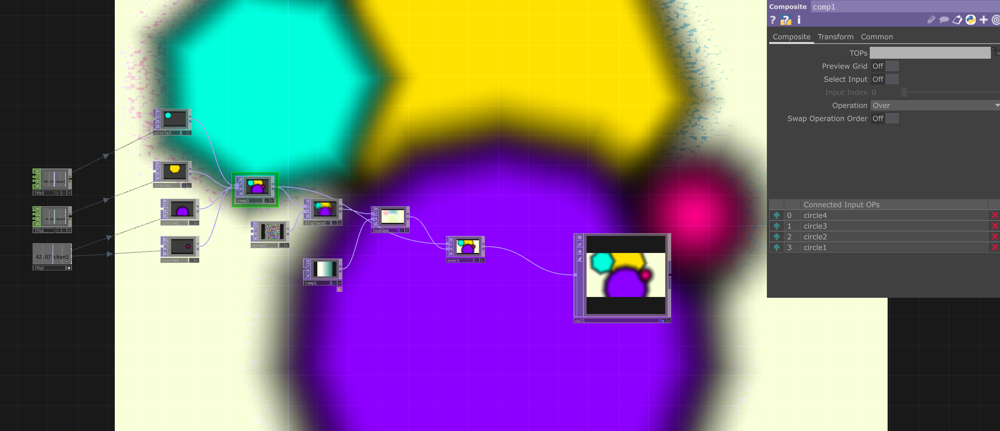
1-1


1-1
It's a re version of inclass project, I add more cirles and also add more sides of cirles, then add live rotate to each pieces, and blur.
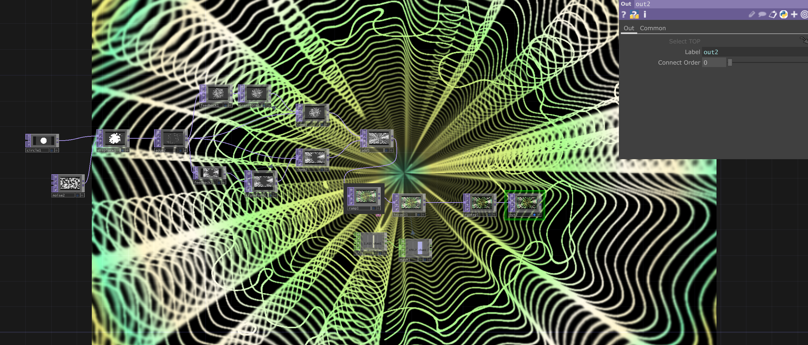
1-2

It's also a new vision of what I made inclass, I change the value of noise and ramp.
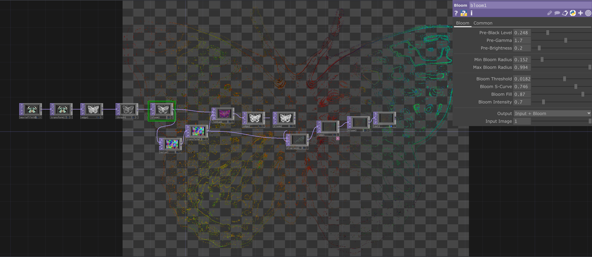
2-1

I plan to make something look like it's in future, but the noise I like made this more like Y2K style, and I find multi edges picture such as butterfly does not work well with what I want
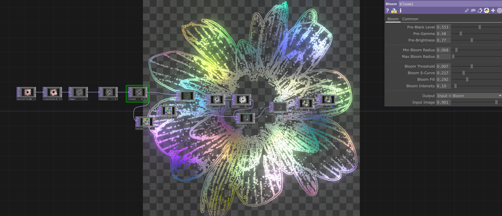
2-2

This one got a better look than the previous ones, and I think the color of noise itself looks good on it.
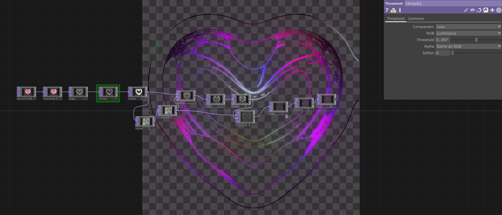
2-3

The original picture is a diamond heart, so the edge is more defined.
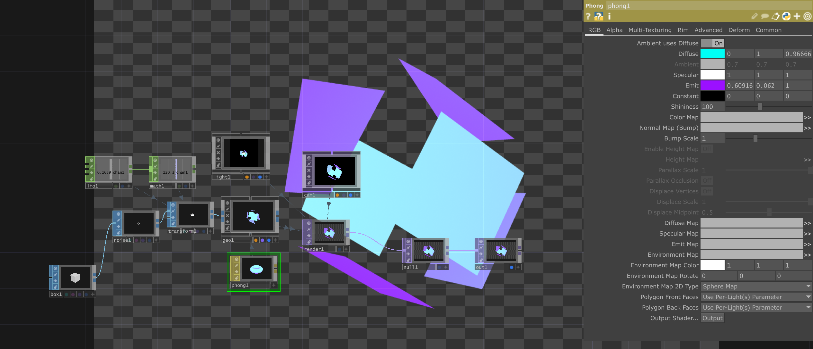
3-1
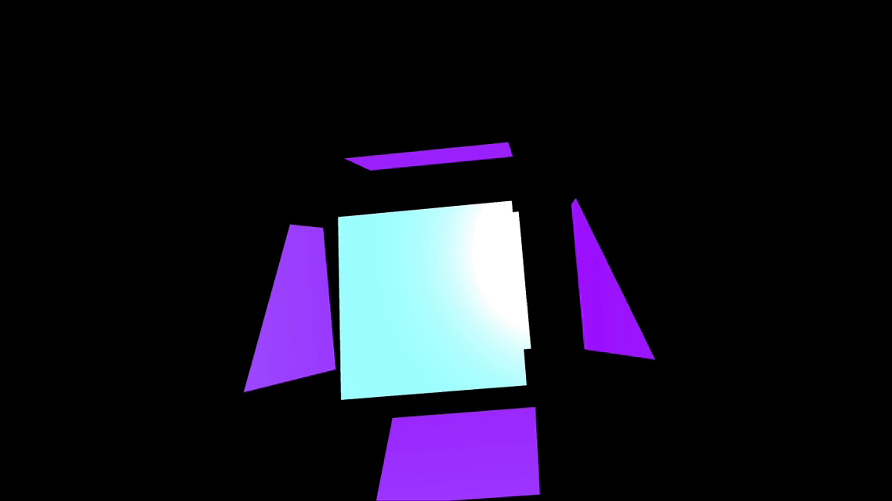
Here is a seires of floating stuffs, this one used box, and each faces are separate by transform.
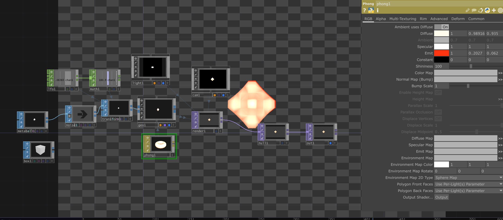
3-2
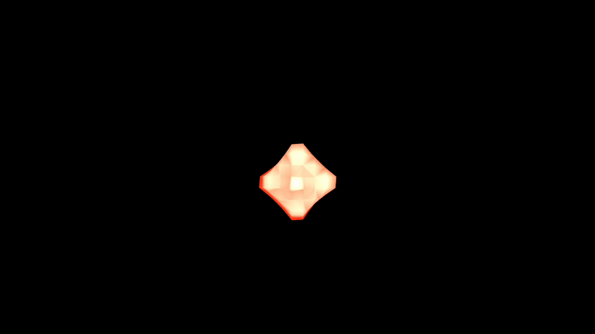
The input shape changes to metaball, and with the change of noise, I made it more like a dimoand that often shows on the top of game's NPC's head.
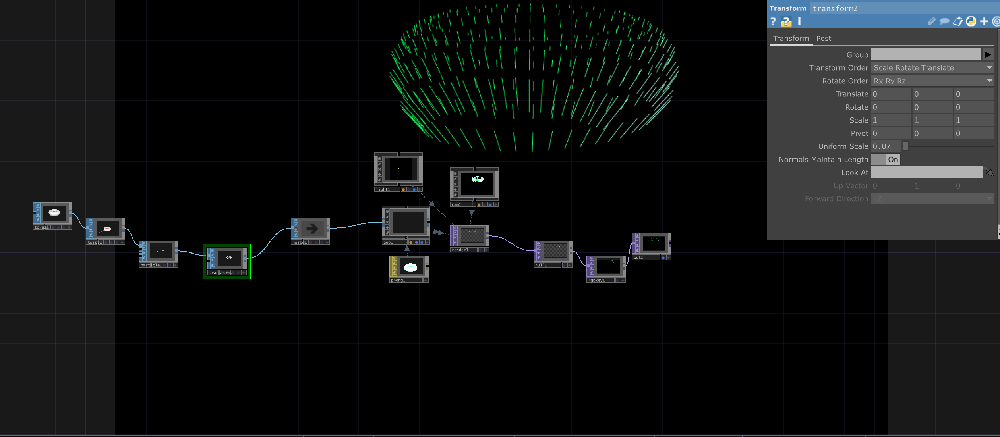
3-3

With the particle and transform's effect, the shape of torus changes to a very fancy shape, I like it.
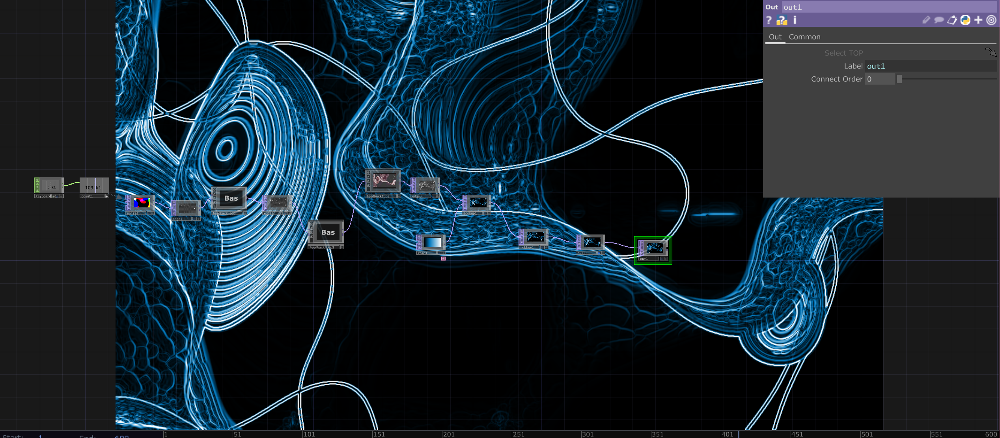
4-1

I simulate the wave, and with keyboard in, everything time click 1 will change a little bit of noise, and feedback edge in the open palette helps me strengthen its look.
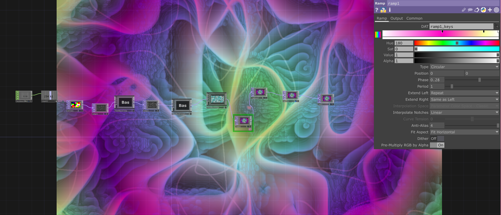
4-2

As I widen the edge and change the values of feedback edge, little change makes a big difference. Now it looks like someone accidently ate a poison mushroom.
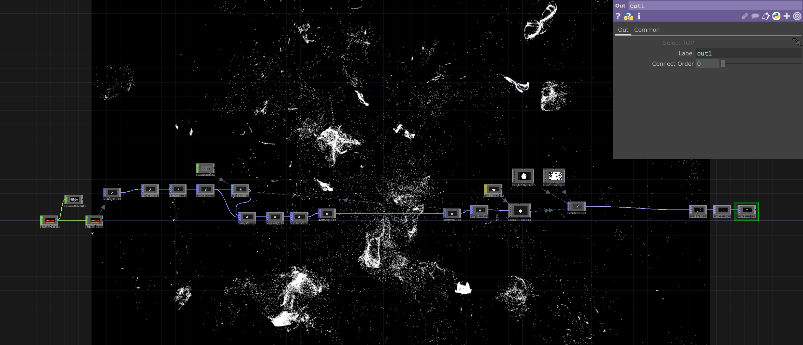
5-1

I learned this from a youtuber who teaches about "pop", but I think it's tricky in usual because it's a little bit large, hard to run. The ideal particle amount I want is 5000, but I failed to achieve it. I encouter a new chop called deltete, it allows me to kill the particles I don't want.
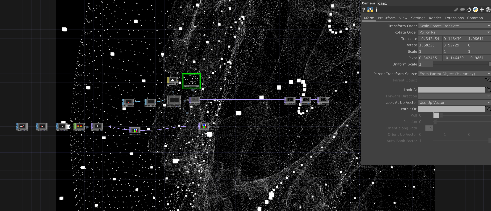
5-2

I twist a tube, and transform it with sopto, add box to create tiny particles.
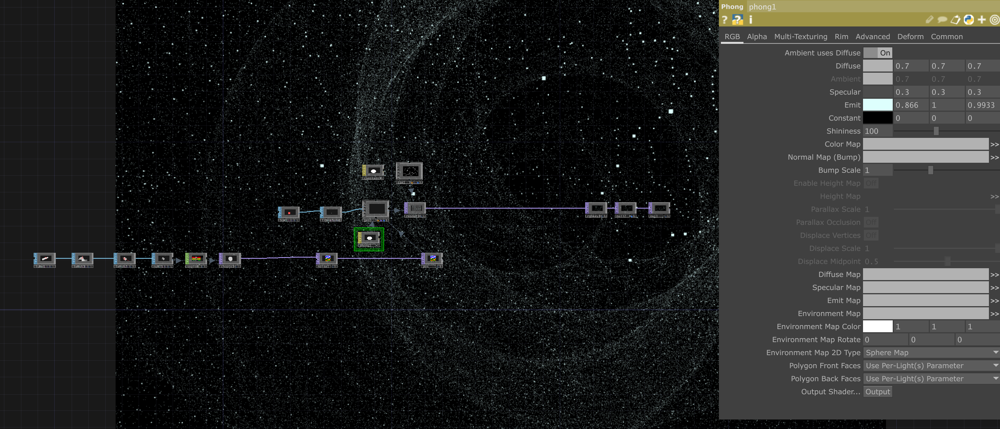
5-3

Then I twist it twice,with changes, a space is created.
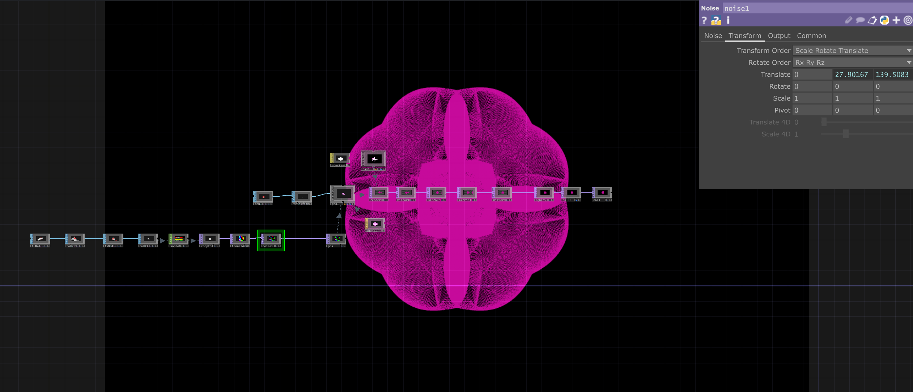
5-4

I use a bunch of mirrors, to create kaleidoscope, and 0.5 + 0.5 * math.sin(absTime.seconds) to change the color instantly, larger number I by, faster the color will be changed.
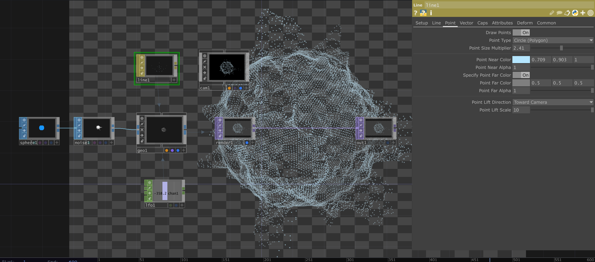
5-5

Following the tutorial, I wanted to create a digital plane, and the texture of brain inspires me.
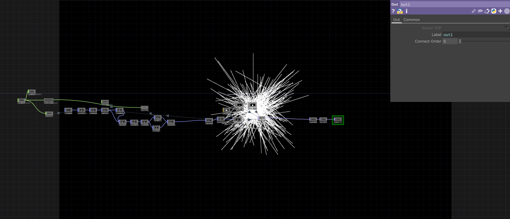
6-1
This one also uses pop and it's way too big for me that it almost kill my computer.
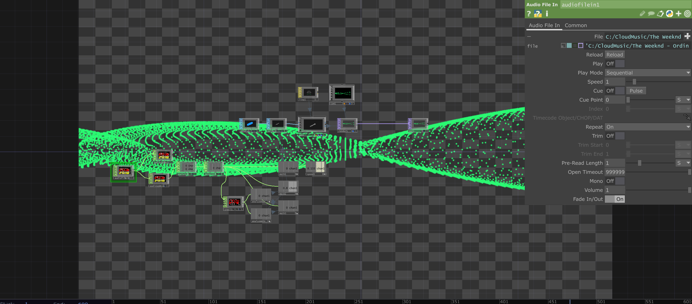
6-2
I change the scale of a sphere, use "line",turn off line and turn on point, reference one trail of the music to the noise of the sphere.
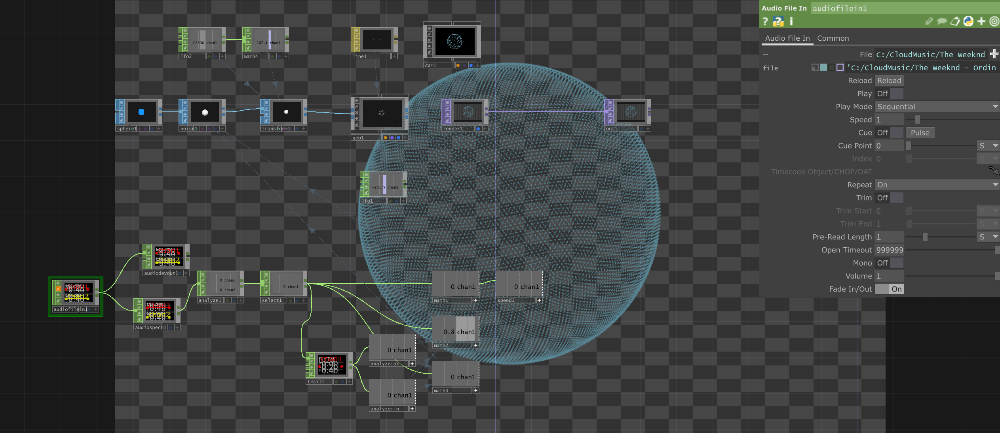
6-3
A floating point sphere with music.
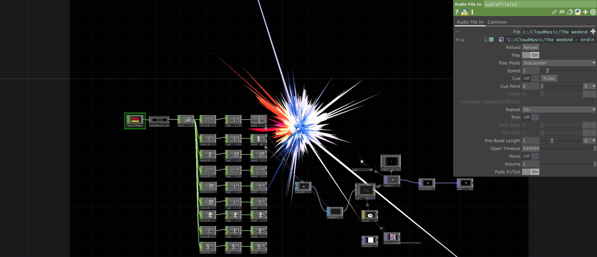
6-4
By another tutorial, I learned how to use audio analyzer, I think it's very nessecery because I can check its movement without sounds.
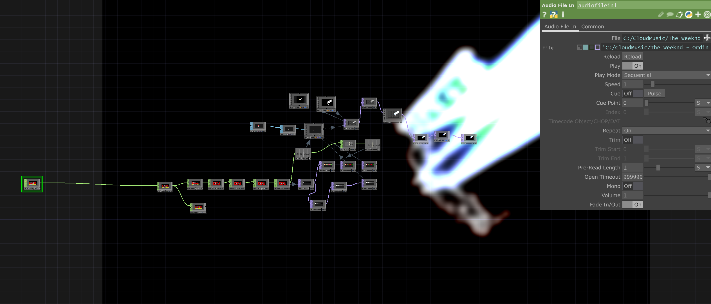
6-5